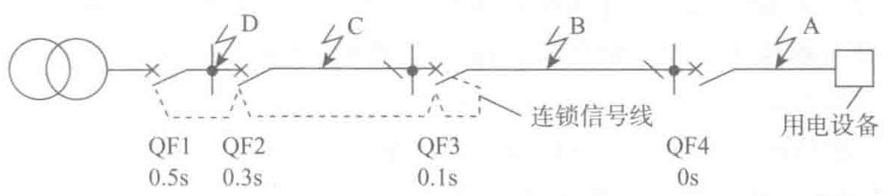

设备不得不直接自变电站引专线供电，这自然要增加配电盘及回路数。另一解决办法是取消上级的瞬动脱扣，靠短延时脱扣切断短路电流以保证选择性，但这又将为保证线路热稳定而增大线路截面，所以都不是理想的措施。
短路保护中选择性得不到保证的问题近年来已能解决。由于电子信息技术的迅速发展，20世纪80年代国际上推出了智能型断路器，它有许多新功能，使低压配电技术得到很大的进步，其中之一就是级间选择性连锁技术（简称ZSI），它能完全有效解决短路保护中级间无选择性瞬动跳闸的问题，其原理可用图2-13来说明。图中末端回路上的断路器仍是具有长延时和瞬动的一般断路器，断路器QF3、QF2和QF1都是带有长延时、短延时和瞬动以及ZSI功能的智能型断路器。采用ZSI时要求在智能型断路器间敷设一条与主回路并列的信号回路，如图2-13中虚线所示。

末端回路是最易发生短路的线段。如图2-13所示，在A点短路时，QF4瞬时动作。这时QF3也检测出短路电流，它通过信号线给QF2和QF1发出信号（同理，QF2也给QF1发出同样信号），使QF2、QF1的瞬动元件被锁住而不动作，同时QF3也给自己发出信号而将瞬动脱扣自锁，以保证和QF4间的选择性。此时QF3仍保留0.1s的短延时动作，以作为QF4的后备保护。当图2-13中所示B点短路时，情况相同，QF3给QF2和QF1发出连锁信号，本身也自锁而延时0.1s动作。因为此点（B点）短路电流不大，而延时又甚短，一般不会因热稳定要求而加大导体截面。当C点短路时，QF2检测出短路电流，它发出连锁信号，使QF1不能瞬动而只剩0.5s的延时动作，而QF2本身未自锁，可瞬时动作，从而大大减少大短路电流对回路导体的热效应。当D点短路时，QF1并未接到前级断路器发来的连锁信号，它可立即动作，从而有效保护了导体。
由上可知，ZSI这项新技术的应用可使配电系统设计得更为合理，它保证了短路保护的选择性，但无须增加配电回路数量，也无须为保证热稳定而加大回路截面。故对于供电等级高的数据中心项目，除按常规使用智能断路器的过电流瞬动保护、短延时、长延时保护和接地故障防护的四阶段保护外，还应根据实际选型的断路器应用ZSI功能。
2.3.5 ATSE系统
1. ATSE概述
GB/T 14048.11—2016《低压开关设备和控制设备 第6-1部分：多功能电路 转换开关电器》中定义，ATSE是适用于额定电压交流不超过1000V或直流不超过1500V的自动